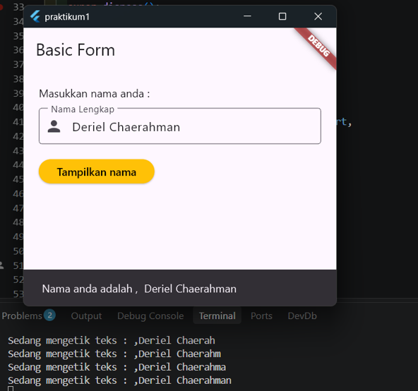
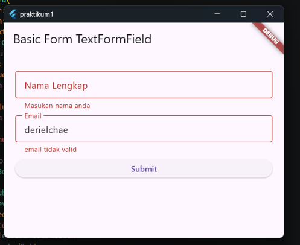
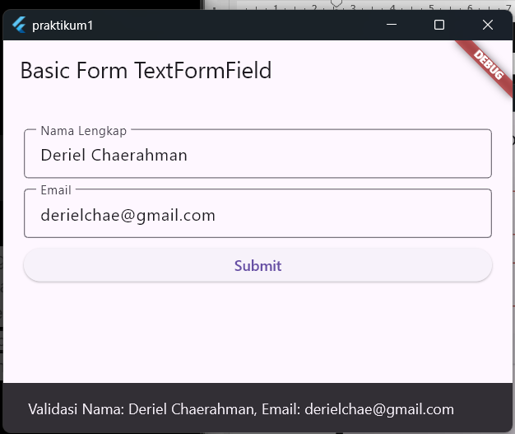
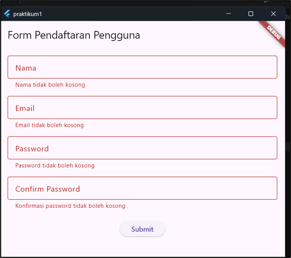
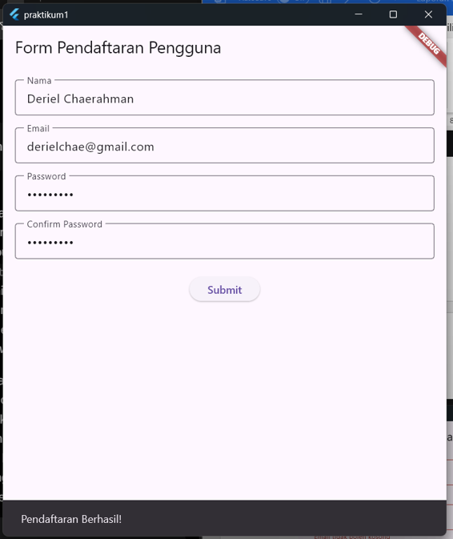

Input Widgets dan Basic Form
Dibuat : September 2026
Repository GitHubPraktikum ini dilakukan untuk menerapkan konsep Basic Form dan Input Widgets dalam pemrograman Flutter, agar aplikasi dapat menerima, mengontrol, dan mengelola inputan teks dari pengguna melalui keyboard secara efisien dan terstruktur.
Materi difokuskan pada implementasi widget TextField dan
TextFormField. Studi kasus mengambil contoh pemrosesan inputan teks
pengguna seperti nama dan email, di mana sistem akan mengecek kesesuaian data
menggunakan fungsi validator dan menampilkan pesan error secara otomatis jika
validasi gagal.
TextField digunakan untuk menerima input langsung dari
pengguna, sedangkan TextFormField adalah versi lanjutan
dari TextField yang terintegrasi langsung dengan logika manajemen
status (state) form dan mekanisme validasi data. Widget ini memiliki
properti validator yang memeriksa keabsahan data input
secara otomatis dan menampilkan pesan kesalahan di bawah field jika
data tidak sesuai aturan.
dispose() ketika widget sudah tidak digunakan lagi
agar tidak terjadi memory leak.
GlobalKey<FormState> sebagai
pengidentifikasi unik untuk mengakses status dari komponen form
(FormState). Melalui GlobalKey, method validate() dapat
dipanggil untuk mengeksekusi fungsi validator pada seluruh
TextFormField di dalam form secara kolektif. Jika seluruh inputan
valid, fungsi mengembalikan true; jika terdapat kesalahan, fungsi
mengembalikan false dan menampilkan pesan kesalahan pada field terkait.
setState() memicu proses rebuild tampilan UI sehingga
perubahan data atau informasi terbaru langsung direfleksikan pada
layar antarmuka pengguna secara dinamis.
A. Basic Form TextField
1. Buat file di folder lib dengan nama
form_textfield.dart, lalu import package material untuk akses
kumpulan widget dasar.
import 'package:flutter/material.dart';
void main() {
runApp(const MyApp());
}
Fungsi main() adalah titik awal eksekusi seluruh aplikasi Flutter, di
mana fungsi ini memanggil runApp() untuk menjalankan root widget
MyApp ke dalam widget tree.
2. Buat kelas MyApp sebagai widget statis
tampilannya, dengan konstruktor const untuk optimasi memori, dan
implementasikan method build() yang mengembalikan
MaterialApp.
class MyApp extends StatelessWidget {
const MyApp({super.key});
@override
Widget build(BuildContext context) {
return MaterialApp(
home: Scaffold(
appBar: AppBar(title: const Text('Basic Form')),
body: const MyForm(),
), // Scaffold
); // MaterialApp
}
}
Properti home diisi dengan Scaffold untuk menyediakan
tata letak visual standar, seperti AppBar bertuliskan "Basic Form" di bagian atas
dan MyForm() sebagai tampilan utama pada bagian body.
3. Buat kelas MyForm sebagai widget
dinamis (StatefulWidget), dengan method createState() untuk
menghubungkan tampilan MyForm dengan kelas penyimpan datanya
(_MyFormState).
class MyForm extends StatefulWidget {
const MyForm({super.key});
@override
State createState() => _MyFormState();
} 4. Buat pengelola input teks dan atur pembersihan
memorinya. Variabel _textEditingController digunakan untuk membaca
dan menyimpan ketikan pengguna, sedangkan fungsi dispose() dipanggil
otomatis saat halaman ditutup agar RAM tidak terbuang sia-sia (memory leak).
class _MyFormState extends State {
final TextEditingController _textEditingController = TextEditingController();
@override
void dispose() {
_textEditingController.dispose();
super.dispose();
} 5. Susun tata letak dan jarak antar tampilan di layar
menggunakan Padding dan Column, lalu buat kolom isian
teks (TextField) yang terhubung dengan _textEditingController. Fungsi
onChanged mencetak teks ke konsol setiap kali pengguna mengetik
karakter baru.
@override
Widget build(BuildContext context) {
return Padding(
padding: const EdgeInsets.all(20.0),
child: Column(
crossAxisAlignment: CrossAxisAlignment.start,
children: [
const Text('Masukkan nama anda :'),
const SizedBox(height: 10),
TextField(
controller: _textEditingController,
decoration: const InputDecoration(
labelText: 'Nama Lengkap',
hintText: 'Misalnya masnoer',
border: OutlineInputBorder(),
prefixIcon: Icon(Icons.person),
), // InputDecoration
keyboardType: TextInputType.text,
onChanged: (text) {
print('Sedang mengetik teks : ,$text');
},
), // TextField6. Tambahkan tombol ElevatedButton yang
mengambil teks inputan dari _textEditingController dan
menampilkannya di bagian bawah layar menggunakan SnackBar.
const SizedBox(height: 20),
ElevatedButton(
onPressed: () {
String inputText = _textEditingController.text;
ScaffoldMessenger.of(context).showSnackBar(
SnackBar(content: Text('Nama anda adalah , $inputText')),
);
},
style: ElevatedButton.styleFrom(
backgroundColor: Colors.amber,
foregroundColor: Colors.black,
),
child: const Text('Tampilkan nama'),
), // ElevatedButton
],
), // Column
); // Padding
}
}Output: form berhasil menangkap ketikan pengguna secara realtime (dicetak ke konsol) dan menampilkan nama yang diinput melalui SnackBar setelah tombol "Tampilkan nama" ditekan.

B. Basic Form TextFormField
1. Buat file di folder lib dengan nama
form_textformfield.dart. Definisikan kelas MyApp sebagai
StatelessWidget dengan AppBar bertuliskan "Basic Form TextFormField" dan body yang
menampilkan widget MyFormText().
import 'package:flutter/material.dart';
void main() {
runApp(const MyApp());
}
class MyApp extends StatelessWidget {
const MyApp({super.key});
@override
Widget build(BuildContext context) {
return MaterialApp(
home: Scaffold(
appBar: AppBar(title: const Text('Basic Form TextFormField')),
body: const MyFormText(),
), // Scaffold
); // MaterialApp
}
}2. Buat widget MyFormText yang bersifat
dinamis (StatefulWidget), dengan createState() menghubungkannya
dengan kelas pengelola statusnya, yaitu _MyFormTextState.
class MyFormText extends StatefulWidget {
const MyFormText({super.key});
@override
State createState() => _MyFormTextState();
} 3. Inisialisasi _formKey menggunakan
GlobalKey<FormState>() sebagai pengenal unik untuk identifikasi
dan validasi status form secara keseluruhan, serta dua variabel pengelola teks
(_nameController dan _emailController) untuk mengontrol
inputan nama dan email dari pengguna.
class _MyFormTextState extends State {
final _formKey = GlobalKey();
final _nameController = TextEditingController();
final _emailController = TextEditingController();
@override
void dispose() {
_nameController.dispose();
_emailController.dispose();
super.dispose();
}
Fungsi dispose() dipanggil otomatis saat widget ditutup, berfungsi
membersihkan input nama dan email dari controller di memori RAM sehingga mencegah
memory leak pada aplikasi.
4. Buat fungsi _submitForm() untuk
mengecek input formulir dengan validasi menggunakan
_formKey.currentState!.validate(). Jika seluruh input valid, sistem
mengambil nilai teks dari controller lalu memunculkan pesan konfirmasi berupa
SnackBar.
void _submitForm() {
if (_formKey.currentState!.validate()) {
String name = _nameController.text;
String email = _emailController.text;
ScaffoldMessenger.of(context).showSnackBar(
SnackBar(content: Text('Validasi Nama: $name, Email: $email')),
);
}
}5. Bangun antarmuka formulir dengan widget
Form berkunci _formKey agar seluruh isinya dapat
divalidasi, dilengkapi TextFormField untuk Nama Lengkap dan Email
masing-masing dengan fungsi validator.
@override
Widget build(BuildContext context) {
return Form(
key: _formKey,
child: Padding(
padding: const EdgeInsets.all(20.0),
child: Column(
mainAxisAlignment: MainAxisAlignment.start,
children: [
const SizedBox(height: 10),
TextFormField(
controller: _nameController,
decoration: const InputDecoration(
labelText: 'Nama Lengkap',
border: OutlineInputBorder(),
), // InputDecoration
validator: (value) {
if (value == null || value.isEmpty) {
return 'Masukan nama anda';
}
return null;
},
), // TextFormField
const SizedBox(height: 10),
TextFormField(
controller: _emailController,
decoration: const InputDecoration(
labelText: 'Email',
border: OutlineInputBorder(),
), // InputDecoration
validator: (value) {
if (value == null || value.isEmpty) {
return 'Masukan email anda';
}
if (!value.contains('@')) {
return 'email tidak valid';
}
return null;
},
), // TextFormField
const SizedBox(height: 10),
SizedBox(
width: double.infinity,
child: ElevatedButton(
onPressed: _submitForm,
child: const Text('Submit'),
), // ElevatedButton
), // SizedBox
],
), // Column
), // Padding
); // Form
}
}Output : Validator pada field Nama menampilkan pesan 'Masukan nama anda' jika kosong. Validator pada field Email memeriksa dua tingkat: kosong ('Masukan email anda') dan format tanpa karakter '@' ('email tidak valid'). Jika semua field valid, tombol Submit memicu SnackBar konfirmasi.


C. Latihan: Implementasi Basic Form Flutter (Form Pendaftaran Pengguna)
1. Pada main.dart, import package material
dan file user_registration_form.dart. MaterialApp diberi title "Form
Pendaftaran", tema warna biru, dan halaman utama
UserRegistrationForm().
import 'package:flutter/material.dart';
import 'user_registration_form.dart';
void main() {
runApp(const MyApp());
}
class MyApp extends StatelessWidget {
const MyApp({super.key});
@override
Widget build(BuildContext context) {
return MaterialApp(
title: 'Form Pendaftaran',
theme: ThemeData(
primarySwatch: Colors.blue,
), // ThemeData
home: const UserRegistrationForm(),
); // MaterialApp
}
}2. Buat file user_registration_form.dart.
Kelas UserRegistrationForm dibuat dinamis, dengan
createState() menghubungkannya ke kelas pengelola statusnya, yaitu
_UserRegistrationFormState.
import 'package:flutter/material.dart';
class UserRegistrationForm extends StatefulWidget {
const UserRegistrationForm({super.key});
@override
State createState() => _UserRegistrationFormState();
} 3. Inisialisasi _formKey sebagai kunci
unik untuk mengidentifikasi dan memvalidasi seluruh formulir, serta empat objek
TextEditingController (nama, email, password, konfirmasi password)
untuk membaca dan mengontrol nilai inputan.
class _UserRegistrationFormState extends State {
final _formKey = GlobalKey();
// Controller baca nilai input
final TextEditingController _nameController = TextEditingController();
final TextEditingController _emailController = TextEditingController();
final TextEditingController _passwordController = TextEditingController();
final TextEditingController _confirmPasswordController =
TextEditingController(); 4. Buat method _submitForm() untuk
menangani pengiriman form: memeriksa validasi lalu menampilkan notifikasi
'Pendaftaran Berhasil!' melalui SnackBar, dan fungsi dispose() untuk
menghapus seluruh controller dari memori.
// Method submit form
void _submitForm() {
if (_formKey.currentState!.validate()) {
ScaffoldMessenger.of(context)
.showSnackBar(const SnackBar(content: Text('Pendaftaran Berhasil!')));
}
}
@override
void dispose() {
_nameController.dispose();
_emailController.dispose();
_passwordController.dispose();
_confirmPasswordController.dispose();
super.dispose();
}5. Susun antarmuka halaman registrasi dengan
Scaffold, AppBar "Form Pendaftaran Pengguna", dan body dibungkus
Form berkunci _formKey serta
SingleChildScrollView di dalam Column agar formulir
dapat digulir dan tidak overflow saat keyboard muncul.
@override
Widget build(BuildContext context) {
return Scaffold(
appBar: AppBar(title: const Text('Form Pendaftaran Pengguna')),
body: Padding(
padding: const EdgeInsets.all(16.0),
child: Form(
key: _formKey,
child: SingleChildScrollView(
child: Column(
children: [6. Widget TextFormField untuk Nama,
Password, dan Confirm Password, masing-masing dilengkapi validator. Password dan
Confirm Password memakai obscureText: true agar karakter
tersembunyi, dan Confirm Password memvalidasi kecocokan nilainya dengan
_passwordController.text.
TextFormField(
controller: _nameController,
decoration: const InputDecoration(
labelText: 'Nama',
border: OutlineInputBorder(),
), // InputDecoration
validator: (value) {
if (value == null || value.isEmpty) {
return 'Nama tidak boleh kosong';
}
return null;
},
), // TextFormField
const SizedBox(height: 16),
// Input Password
TextFormField(
controller: _passwordController,
obscureText: true,
decoration: const InputDecoration(
labelText: 'Password',
border: OutlineInputBorder(),
), // InputDecoration
validator: (value) {
if (value == null || value.isEmpty) {
return 'Password tidak boleh kosong';
}
return null;
},
), // TextFormField
const SizedBox(height: 16),
// Input Confirm Password
TextFormField(
controller: _confirmPasswordController,
obscureText: true,
decoration: const InputDecoration(
labelText: 'Confirm Password',
border: OutlineInputBorder(),
), // InputDecoration
validator: (value) {
if (value == null || value.isEmpty) {
return 'Konfirmasi password tidak boleh kosong';
}
if (value != _passwordController.text) {
return 'Password dan Confirm Password harus sama';
}
return null;
},
), // TextFormField
const SizedBox(height: 24),
// Tombol Submit
ElevatedButton(
onPressed: _submitForm,
child: const Text('Submit'),
), // ElevatedButton
],
), // Column
), // SingleChildScrollView
), // Form
), // Padding
); // Scaffold
}
}Output: saat form dikirim dalam keadaan kosong, seluruh field menampilkan pesan validasi masing-masing. Setelah semua data diisi dengan benar dan password cocok dengan konfirmasinya, sistem menampilkan SnackBar "Pendaftaran Berhasil!" di bagian bawah layar.


Dari hasil praktikum ini, berhasil dibangun formulir pendaftaran interaktif pada aplikasi Flutter dengan memanfaatkan StatefulWidget untuk mengelola perubahan data secara dinamis.
validate() dapat
memvalidasi seluruh field sekaligus._submitForm().
Melalui praktikum ini juga dipahami pentingnya efisiensi memori dalam pengembangan aplikasi mobile, khususnya lewat pembersihan controller yang konsisten agar kinerja aplikasi tetap stabil dan ringan.